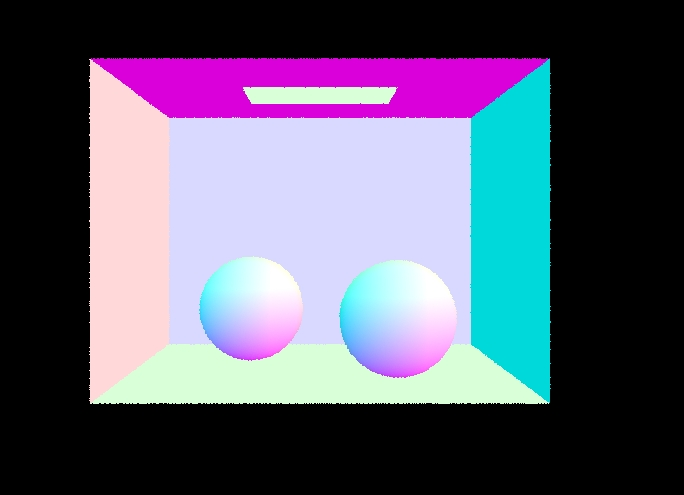
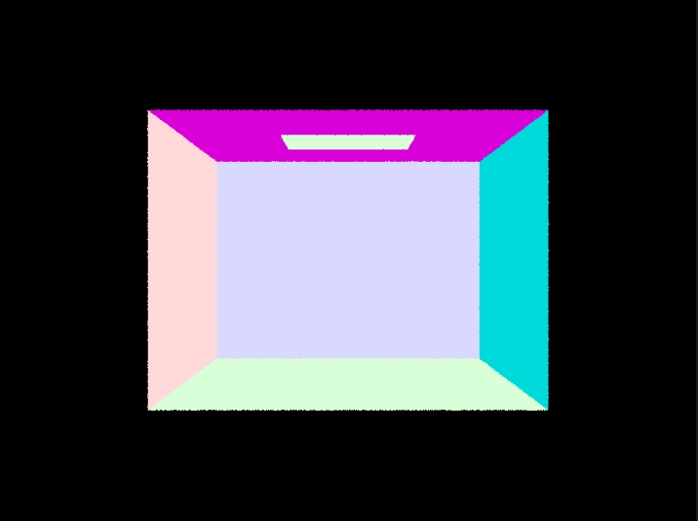
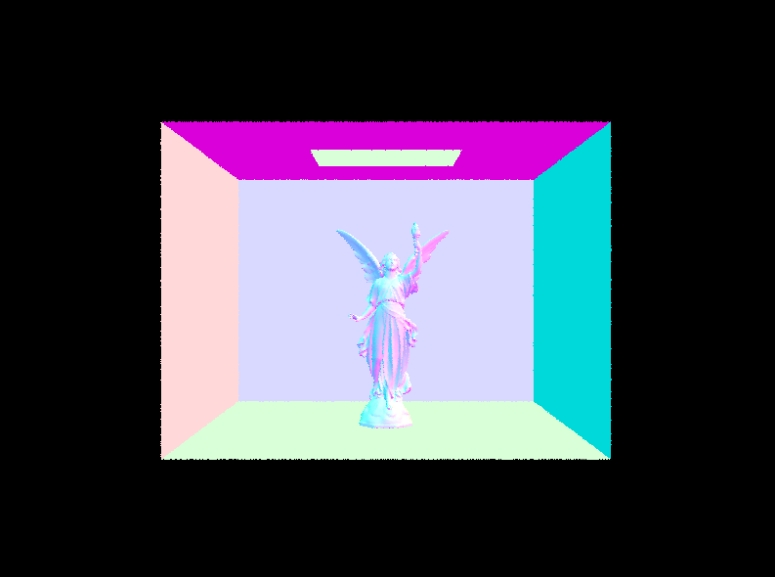
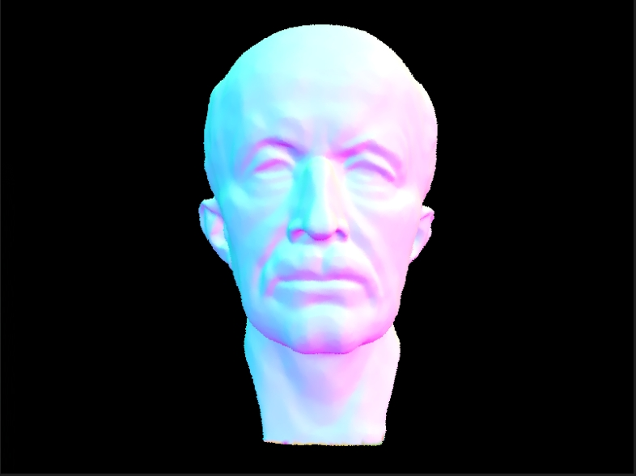

Homework 3
Overview
In this homework, we go through the process of rendering a simple scene using ray tracing.
In Part 1, we generated rays to simulate a camera's view and tested them for intersections with objects in the scene.
Part 2 introduced the Bounding Volume Hierarchy (BVH) data structure to speed up intersection tests by organizing objects hierarchically.
Direct Illumination in Part 3 focused on computing the lighting from visible light sources directly hitting surfaces.
Part 4 extended this to Global Illumination, considering indirect lighting effects for more realistic scenes.
Finally, Part 5 introduced Adaptive Sampling, dynamically adjusting sample counts to improve image quality efficiently.
In this assignment,
Webpage:
Zimo Fan:https://github.com/cal-cs184-student/hw-webpages-sp24-Leona-Fan/blob/master/hw3/index.html
Xinzhe Wei:https://github.com/cal-cs184-student/hw-webpages-sp24-Bevuxna/blob/master/hw3/index.html
Part 1
- Walk through the ray generation and primitive intersection parts of the rendering pipeline
For ray generation,we first generate rays from the camera.Then, we determine the intersection of the ray with the scene. For each pixel in the image, a corresponding ray is generated.
The ray's origin is set to the camera's position, and its direction is determined by casting a ray from the camera through the pixel's position on the image plane.
These rays represent the paths of light traveling from the camera into the scene, allowing us to simulate the view of the scene from the camera's perspective.
For primitive ntersection, once rays are generated, the next step is to determine if they intersect with any primitives like triangles in the scene.
This intersection test is crucial for determining which objects are visible in the rendered image.
The BVH is used to accelerate the intersection testing process by organizing the scene primitives into a hierarchical data structure.
By traversing the BVH, we can quickly identify which primitives may intersect with a given ray.
For each primitive, an intersection test is performed to check if the ray intersects with it.
If an intersection is found, information about the intersection point, such as the position, surface normal, and material properties, is recorded.
This process continues until all rays have been tested for intersections with scene primitives.
The results of these intersection tests are used to determine the color and appearance of each pixel in the final rendered image.
- Explain the triangle intersection algorithm you implemented in your own words.
We first check if t falls within the valid range of the ray. If it does, we verify whether the intersection point lies within the triangle by calculating its barycentric coordinates.
If the point is inside the triangle, we interpolate the surface normal at the intersection point using the vertex normals.
Finally, we update the Intersection data with the intersection details and return true if an intersection is found, otherwise fals
- Show images with normal shading for a few small .dae files.

small .dae 1

small .dae 2
Part 2
- Walk through your BVH construction algorithm. Explain the heuristic you chose for picking the splitting point.
We first compute the bounding box of the primitives within the current range. This bounding box encapsulates all the primitives and serves as a spatial boundary.
Then we calculate the number of primitives in the current range, we create a new BVHNode with the computed bounding box. If the number of primitives is within the specified maximum leaf size, we create a leaf node and store the primitives within it.
If there are more primitives than the maximum leaf size, we need to further subdivide the space. To do this, we identify the axis with the largest extent of the bounding box. This axis provides the most significant spatial dimension along which to split the primitives.
Next, we sort the primitives along this axis to facilitate efficient splitting. Sorting ensures that the primitives are arranged in such a way that the splitting plane divides them evenly, optimizing the BVH structure.
Once sorted, we calculate the mid-point index to split the primitives into two roughly equal halves. We then recursively construct the left and right children of the node using the primitives split at the mid-point.
This recursive will continue until leaf nodes containing a small number of primitives or until the entire BVH tree has been constructed.
Overall, our heuristic for picking the splitting point is based on selecting the axis with the largest extent of the bounding box. This approach helps maintain balance within the BVH tree and facilitates efficient traversal during ray intersection tests.
- Show images with normal shading for a few large .dae files that you can only render with BVH acceleration.

large .dae 1

large .dae 2
- Compare rendering times on a few scenes with moderately complex geometries with and without BVH acceleration. Present your results in a one-paragraph analysis.
Without BVH acceleration, rendering a scene with moderately complex geometries takes about 10 minutes on my virtual machine. With BVH acceleration, rendering the same scene takes about 2 seconds.
Part 3
- Walk through both implementations of the direct lighting function.
For each light source, we generate rays from the light source towards the hit point in the scene. If the light source is not a point light, we sample multiple locations on its surface.
For each ray, we check if it intersects with any object between the light source and the hit point.
If unobstructed, we calculate its contribution to the final pixel color at the hit point, incoming radiance from the light source, cosine of the angle with the surface normal, and the inverse probability density function (pdf) of sampling the ray direction.
This process estimates direct illumination at the hit point.
- Show some images rendered with both implementations of the direct lighting function.
- Focus on one particular scene with at least one area light and compare the noise levels in soft shadows when rendering with 1, 4, 16, and 64 light rays (the -l flag) and with 1 sample per pixel (the -s flag) using light sampling, not uniform hemisphere sampling.
- Compare the results between uniform hemisphere sampling and lighting sampling in a one-paragraph analysis.
When the same number of samples are taken per pixel per light, important sampling over the light source yields a "smoother" result compared to uniform sampling over the hemisphere. This occurs because in hemisphere sampling, many sample rays fail to intersect with a light source, resulting in high variance and noisy rendered output. Conversely, when sampling over the light source, it is ensured that the ray will hit the light source if there is no intersection in between.
Part 4
- Walk through your implementation of the indirect lighting function.
- Show some images rendered with global (direct and indirect) illumination. Use 1024 samples per pixel.
- Pick one scene and compare rendered views first with only direct illumination, then only indirect illumination. Use 1024 samples per pixel. (You will have to edit PathTracer::at_least_one_bounce_radiance(...) in your code to generate these views.)
- For CBbunny.dae, render the mth bounce of light with max_ray_depth set to 0, 1, 2, 3, 4, and 5 (the -m flag), and isAccumBounces=false. Explain in your writeup what you see for the 2nd and 3rd bounce of light, and how it contributes to the quality of the rendered image compared to rasterization. Use 1024 samples per pixel.
- For CBbunny.dae, compare rendered views with max_ray_depth set to 0, 1, 2, 3, 4, and 5(the -m flag). Use 1024 samples per pixel.
- For CBbunny.dae, output the Russian Roulette rendering with max_ray_depth set to 0, 1, 2, 3, 4, and 100(the -m flag). Use 1024 samples per pixel.
- Pick one scene and compare rendered views with various sample-per-pixel rates, including at least 1, 2, 4, 8, 16, 64, and 1024. Use 4 light rays.
- You will probably want to use the instructional machines for the above renders in order to not burn up your own computer for hours.
Part 5
- Explain adaptive sampling. Walk through your implementation of the adaptive sampling.
- Pick two scenes and render them with at least 2048 samples per pixel. Show a good sampling rate image with clearly visible differences in sampling rate over various regions and pixels. Include both your sample rate image, which shows your how your adaptive sampling changes depending on which part of the image you are rendering, and your noise-free rendered result. Use 1 sample per light and at least 5 for max ray depth.